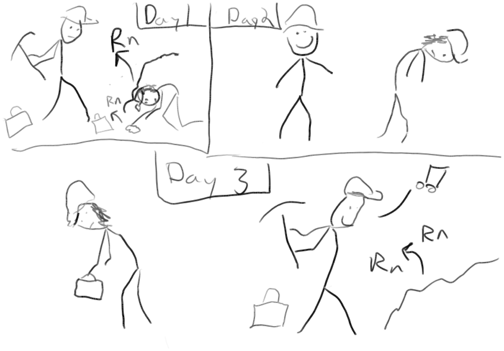
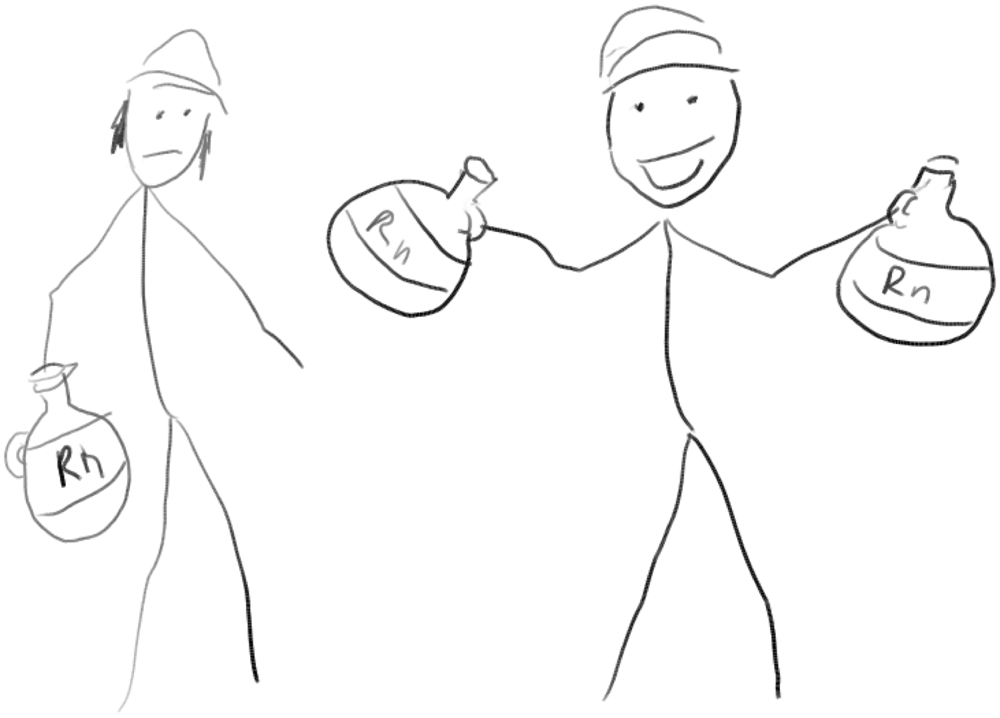
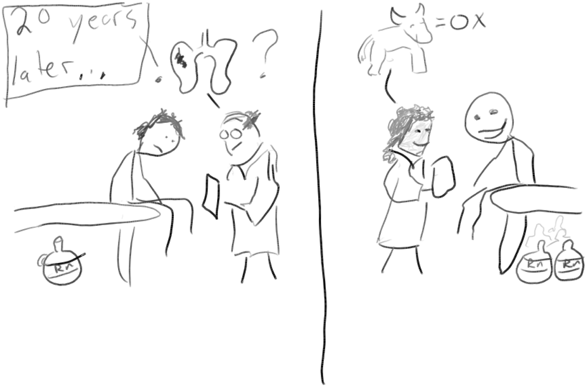
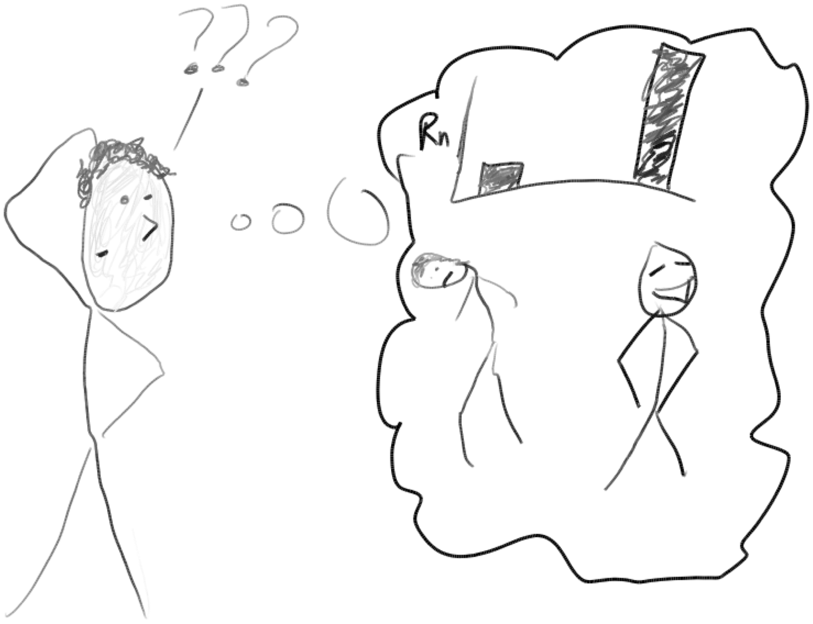

| ALEXANDER KEIL |
 |
|
Healthy worker survivor bias is a problem in occupational studies that can make a harmful exposure appear to be neutral, or even beneficial! While public health researchers have developed methods to overcome this bias, no statistical method is perfect, so we must always be on guard to ensure that this bias isn't fooling us into making false conclusions. Here is a short explanation of how the healthy worker survivor bias happens using a hypothetical example from miners, who breathe in high levels of radioactive radon. In the Uranium mines, it was common that some workers seemed to thrive in the harsh underground environment while others did not. Some of these differences are attributable to unknown or unmeasured factors that determine health, such as genetics, early life experiences, or old-fashioned bad luck.  |
|
At the end of the day, because the thriving workers are able to sustain work for longer periods of time, they end up with more radon exposure in the mine. The sicker workers spent some time at home and were exposed to less radon.  |
|
Often, the things that make us sick when we are younger can also contribute to illness when we are older. The thriving miner is still healthy as an ox, 20 years out, while the other miner has been diagnosed with lung cancer.  |
|
The problem for health researchers is to figure out the relationship between radon and lung cancer, in spite of this strange scenario where the healthy workers get exposed more. Even though there may be strong effects of radon, these effects are masked by the staying power or "survival" of healthy workers. The healthiest workers tend to get exposed more just because they can stay at work longer. If you are not careful, you could really underestimate the harmful effects of radon - in statistics, we refer to the underestimation as "bias." Hence, we call it "healthy worker survivor bias." It's the job of the health researcher to tease apart the effects of underlying health from the effects of radon - it's not an easy job!  |